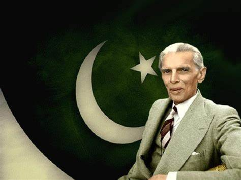

History of Pakistan's Independence

The Lahore Resolution of 1940 was a significant moment in the struggle for Pakistan’s independence. It laid the foundation for a separate nation for Muslims in British India.

On August 14, 1947, Pakistan was born as an independent nation, following the end of British rule in India. This marked a momentous occasion for millions of Muslims in the subcontinent.

Quaid-e-Azam Muhammad Ali Jinnah became the first Governor-General of Pakistan. His leadership was crucial in the establishment of the new nation.

Pakistan adopted its first constitution in 1956, becoming the Islamic Republic of Pakistan. This was a major milestone in the country’s political development.